原网格上的实际源叠图（09-26 候选）
紫色为源外墙边，绿色为窗，橙色为门，按记录坐标关系投影；扫描缺面不代表真实透空。
09-26新观察 · prot_oblique_se · 全部空间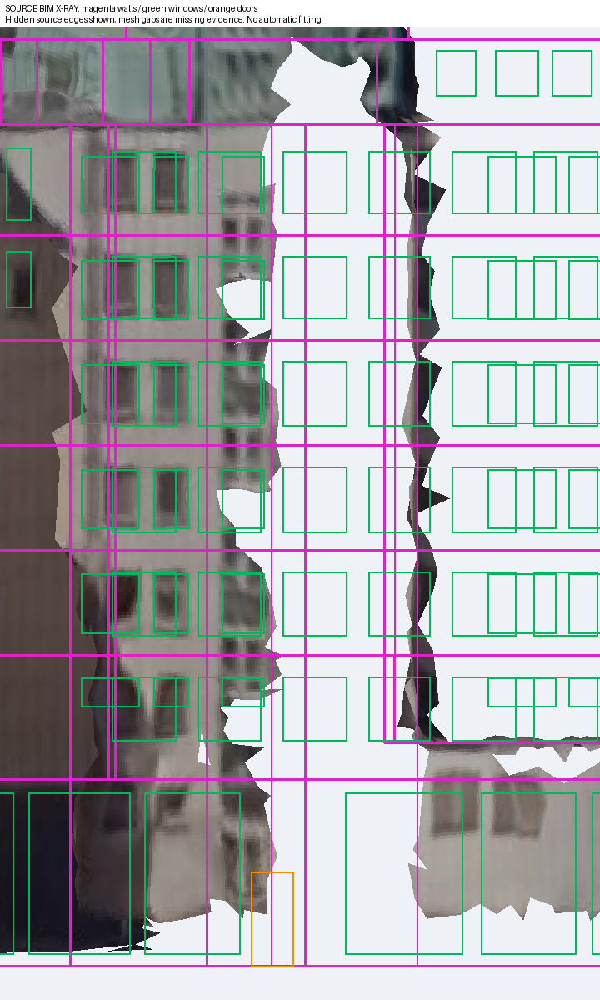
09-26新观察 · prot_oblique_ne · 全部空间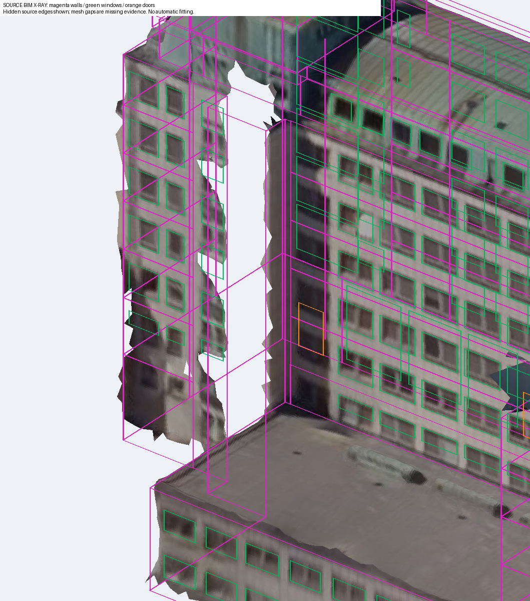
09-26新观察 · prot_top · 全部空间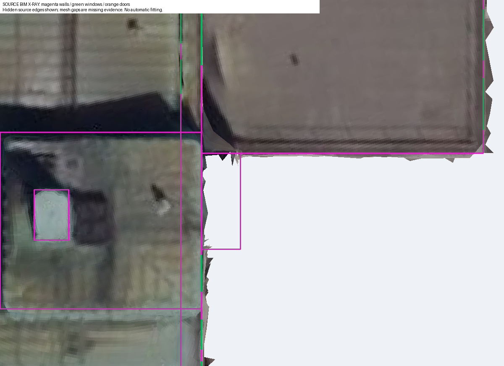
09-26新观察 · annex_south_face · 全部空间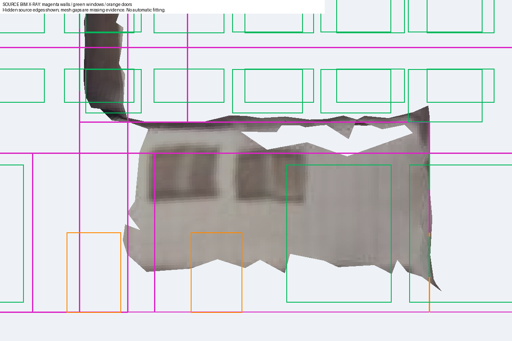
09-25观察 · court_long_south · 全部空间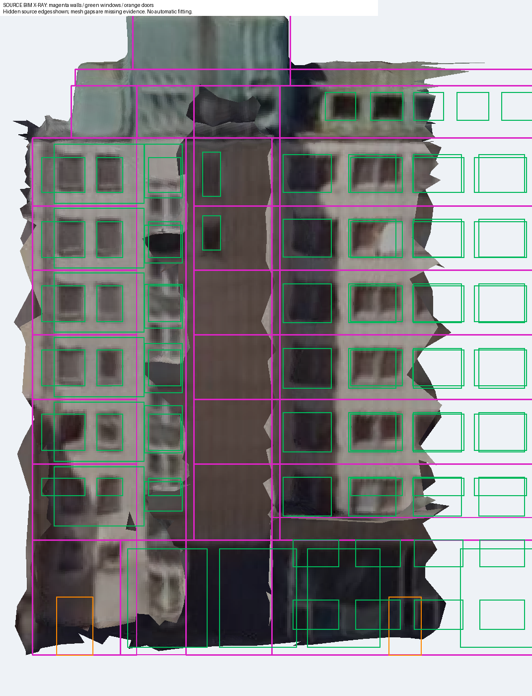
09-25观察 · court_southeast_oblique · 全部空间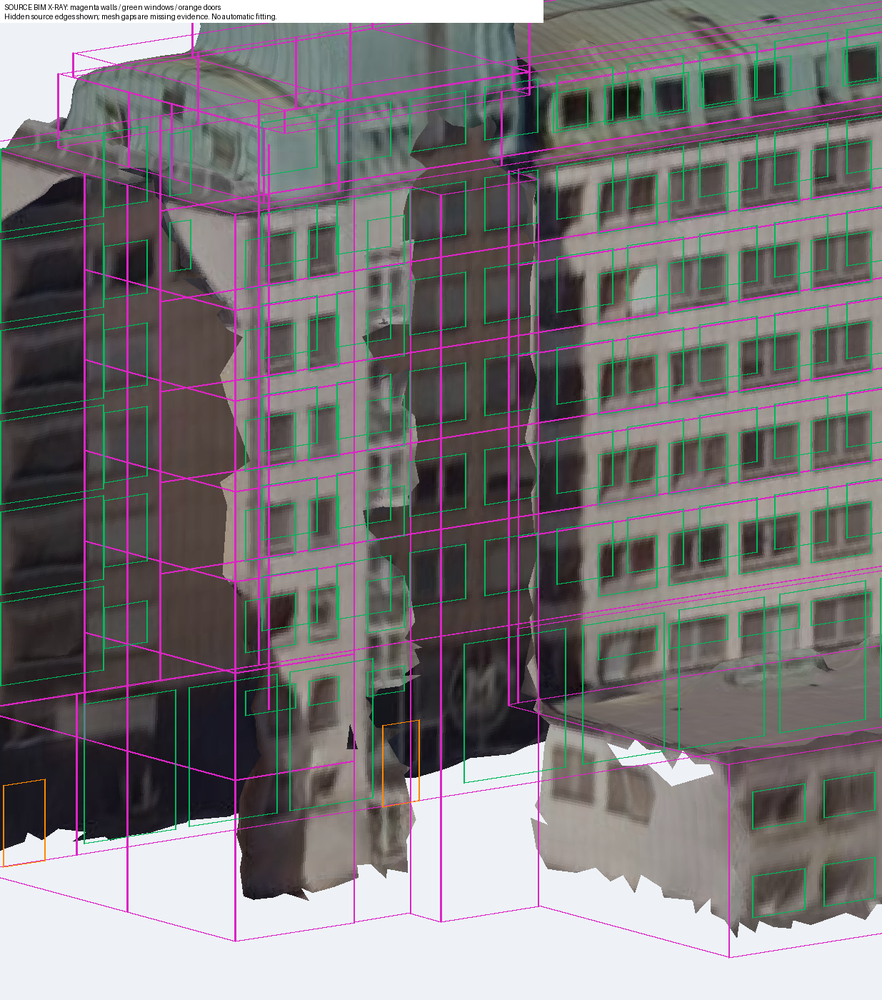
候选源模型水平剖切
内部为方案假设；跨层核心和塔体按实际空间相交显示，没有添加中间楼板。
源模型水平剖切 z=2.8m，包含实际相交的跨层空间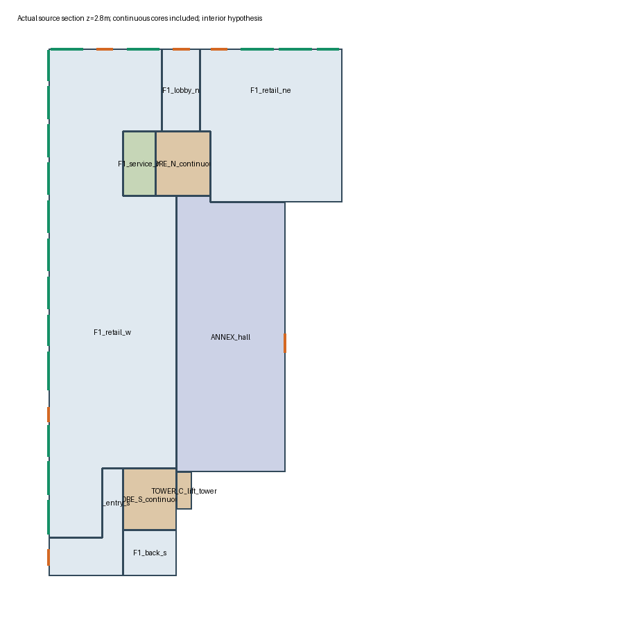
源模型水平剖切 z=10.4m，包含实际相交的跨层空间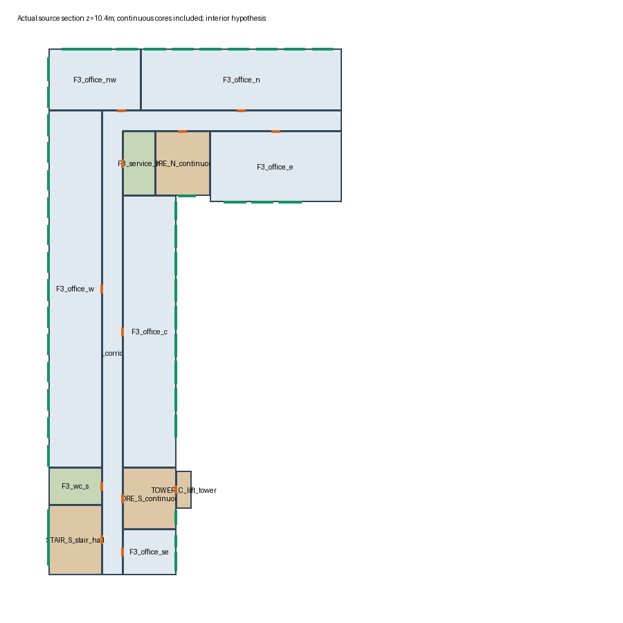
源模型水平剖切 z=26.3m，包含实际相交的跨层空间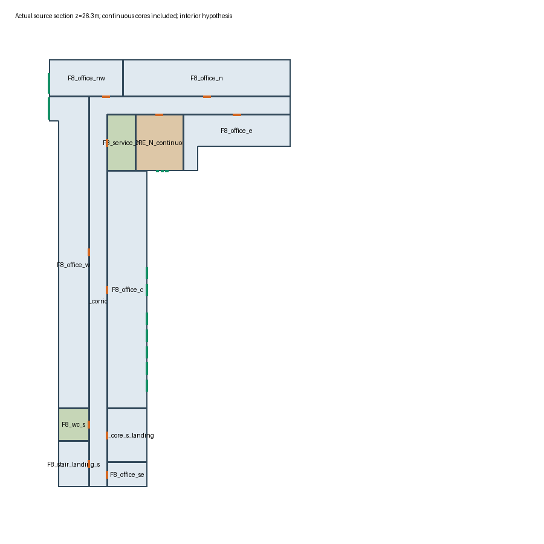
源模型水平剖切 z=28.2m，包含实际相交的跨层空间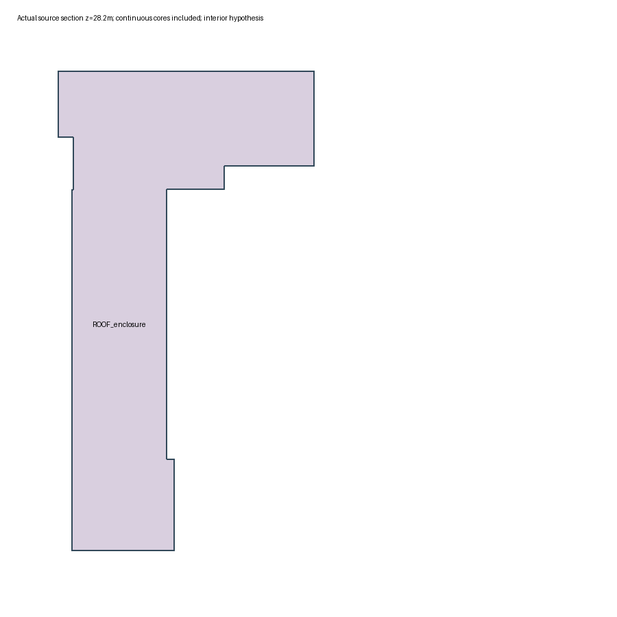
源模型水平剖切 z=29.8m，包含实际相交的跨层空间 源模型水平剖切 z=30.1m，包含实际相交的跨层空间
源模型水平剖切 z=30.1m，包含实际相交的跨层空间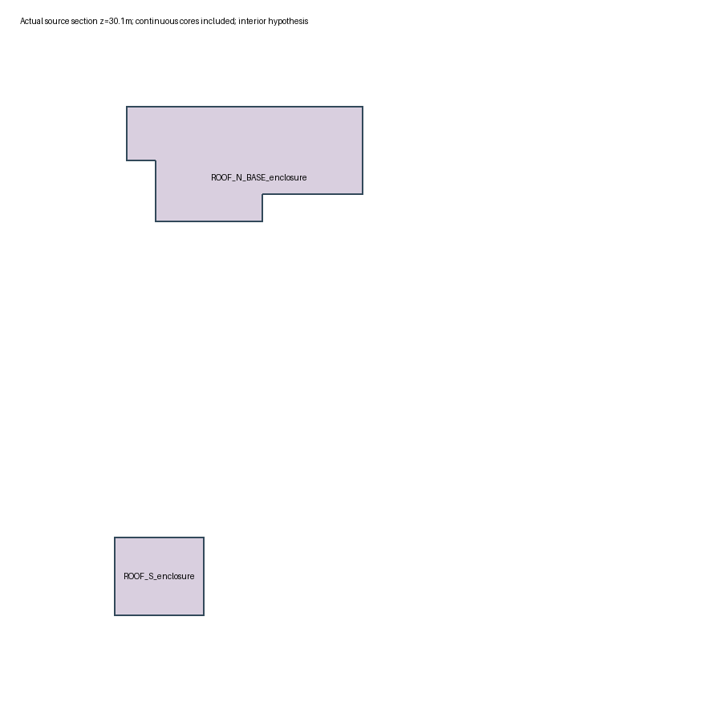
源模型水平剖切 z=31.55m，包含实际相交的跨层空间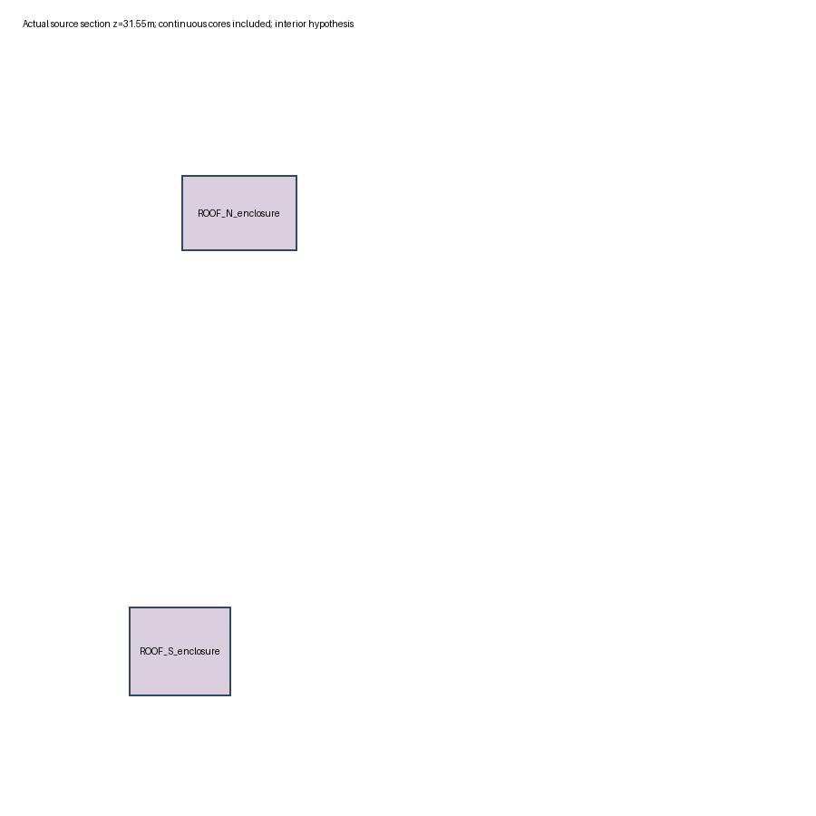
源模型水平剖切 z=32.9m，包含实际相交的跨层空间